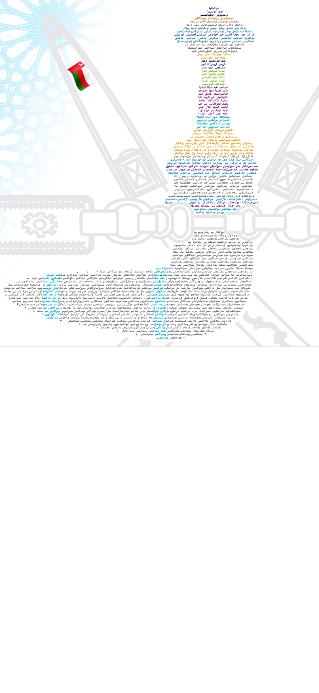

<audio id="7" src="7.mp3" preload="auto"></audio>


<script>

    function f7() {
        var audio = document.getElementById("7");

        if (audio.duration > 0 && !audio.paused) {
            audio.pause();
            audio.currentTime = 0;
        } else {
            audio.play();
        }
    }

</script>


<map name="image-map">

    <area target="_blank" alt="" title="" href="" onclick="javascript:f7(); return false;" coords="284,202,230,241,281,324,342,288" shape="poly">
        
  
  </map>
